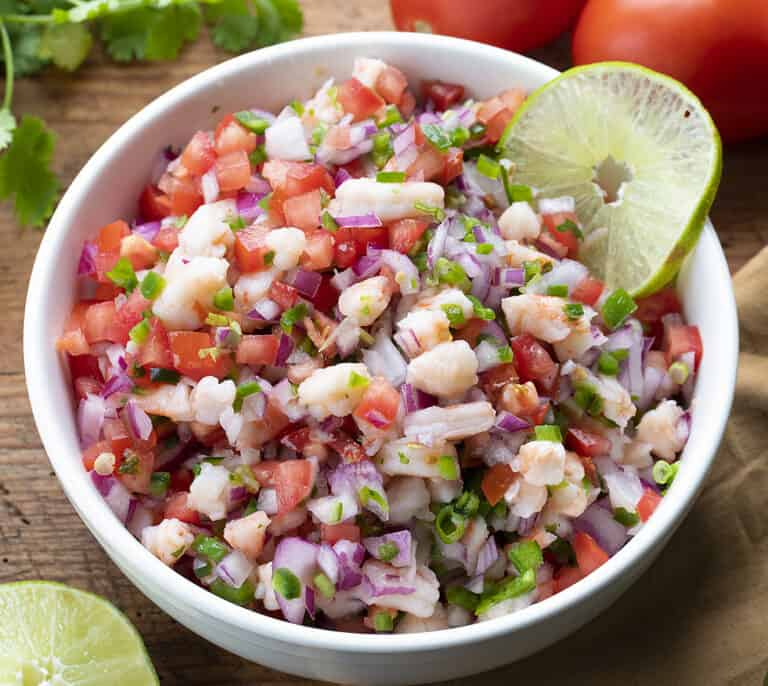

Mexican Ceviche

Delicious Mexican Ceviche
This mexican dish is prepared with fresh tomatoes, onions and cilantro. To this delicious mix, you add shrimps and conchs to create your ceviche!
Ingredients
- 5 large lemons, juice
- 1lb jumbo shrimp, peeled and deveined
- 1/4 cup chopped fresh cilantro, or to taste
- Tomato and clam juice cocktail
- 2 white onion, finely chopped
- 1 large tomatoes, seeded and chopped
Document
- 3 fresh jalapeno peppers, seeded and minced
- 1 bunch radishes, finely diced
- 2 cloves fresh garlic, minced
- Tortilla chips
Steps
- Place shrimp in a bowl (You may either coarsely chop the shrimp, or leave them whole, depending on your preference.) Add lemon, covering shrimp completely. Cover, and refrigerate for 30 minutes, or until opaque and slightly firm
- Add tomatoes, onions, radishes, and garlic: toss to combine. Gradually add cilantro and jalapenos to desired taste. Stir in tomato and clam juices to desired consistency. Cover, and refrigerate for 1 hour. Serve chilled with tortilla chips.
Home